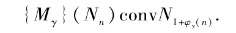
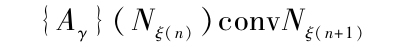
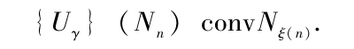
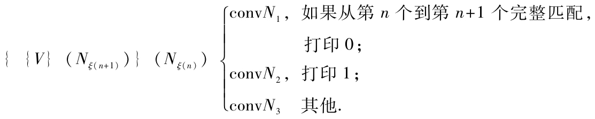
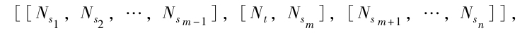

关于所有有效可演算（λ可定义）的序列是可以计算的定理以及它的逆定理在下面给出一个轮廓性的证明．对合式公式（W．F．F．）以及“逆定理”理解为像丘奇和克林尼所用过的那样的含义．在下面的第二个证明中承认有几个公式存在但是没有给出证明；这些公式可以直接地构造出来，想了解详情请参看克林尼的文章“A theory of positive integers in formal logic”，American Journal of Math.，57（1935），153-173，219-244．
代表一个整数n的W．F．F．记作Nn．我们说一个序列γ第n个数字φy（n）是λ可定义的或者是有效可演算的，如果1+φy（u）是一个n的λ可定义函数，也就是说，如果有一个W．F．F．，Mγ使得对所有整数n，
也就是说，对应于根据λ的第n个数字是1或者0，{Mγ}（Nn）可以转化成λxy′·x（x（y））或者转化成λxy·x（y）．
为要证明每一个λ可计算序列γ是可计算的，我们需要指出怎样构造一个机器来计算γ，使得机器在转换的演算中做一个简单的修改是方便的．这个改变包括用x，x′，x″，…来代替a，b，c，…．我们现在构造一个机器L，当提供公式Mγ时，能写下序列γ．L的构造和泛函数演算中证明所有可以证明的公式的机器K有些类似，我们首先构造一个选择型机器L1，它如果能提供一个W.F．F．，M，譬如说，经过适当的操作，得到任意一个M可以转换成的公式，然后L1又可以改进成为一个自动机器L2，它能够将所有M转换成的公式逐个地产生出来（请参看脚注［7］）．机器L把机器L2包含在内作为一个部件，当提供公式Mγ时，L的动作分成若干段落，其中第n个段落是专门用来找出γ的第n个数字，这个第n个段落的第一步是形成公式{mγ}（Nn）．然后这个公式就提供给L2，它将公式逐个地转换成为各种其他的公式．每一个可以转换成的公式最终总会出现，并且每一个公式只要找到，就拿来和
λx［λx′［{x}（{x}（x′））］］即N2
以及
λx［λx′［{x}（x′）］］即N1
进行比较．如果它和这两个式子中的第一个式子相同，那么机器打印数字1，并且第n个段落结束．如果它和这两个式子中的第二个式子相同，那么机器打印数字0，并且第n个段落结束．如果这两种情形都不是，那么L2恢复工作，由假设{Mγ}（Nn）可以转换成为N2或者N1；因此第n段落最终一定会结束，也就是说γ的第n个数字最终一定会被写下来．
想要证明每一个可计算序列γ是λ可定义的，我们必须说明如何找到一个公式Mγ，使得对所有整数n，

设M能计算γ并且让我们用数作为工具取出M的一些完整匹配描述的机器，例如，我们可以使用§6中的完整匹配的D．N描述．设ξ（n）为这个M的第n个完整匹配的D．N.机器M的表给我们一个如下形式的ξ（n+1）和ξ（n）之间的关系：
ξ（n+1）=ργ（ξ（n）），
其中ργ是一个受到严格限制的函数形式，通常不是很简单的：它是由M的M表所确定的，ργ是λ可定义的（我省略了这一点的证明），也就是说有一个W.F.F.Aγ使得对所有整数n，

设U代表
λu［{{u}（Aγ）}（Nγ）］，
其中r=ξ（0）；那么对所有整数n，

可以证明有一个公式V使得

设Wγ表示
λu［{{V}（{Aγ}（{Uγ}（u）））}（{Uγ}（u））］，
使得对每一个整数n，
{{V}（Nξ（n+1））}（Nξ（n））conv{Wγ}（Nn），
并且设Q是一个公式，使得
{{Q}（Wγ）}（Ns）convNr（z），
其中r（s）是第s个整数q，对于它，{Wγ}（Nq）可以转换成为N1或者N2．如果Mγ代表
λw［｛Wγ}（{{Q}（Wγ）}（w））］，
就得到所要求的性质[1]．
美国新泽西州普林斯顿大学研究生院
（罗里波 译）
[1]在一个可计算序列的λ可定义性的完整证明中，最好是用一个对我们的装置更加容易掌握的描述来代替完整匹配的数字化的描述来修正这个办法．让我们选择某些整数代表机器的记号和m匹配．假设在一个完整匹配中，代表带上连续记号的数字是s1s2…sn，并且第n个记号被扫描，m匹配有数字t；于是我们就可以用这个公式来代表完整匹配

其中［a，b］的含义是
λu［｛｛u｝（a）｝（b）］，
［a，b，c］的含义是
λu［｛｛｛u｝（a）｝（b）｝（c）］，
等等．